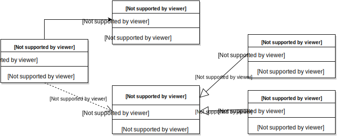
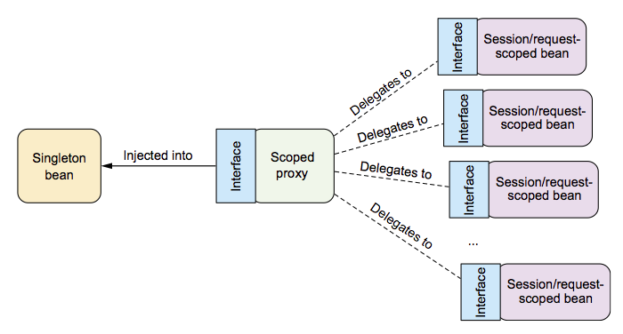

// glavna serverska petlja
ServerSocket ss = new ServerSocket(80);
while (true) {
Socket s = ss.accept();
ResponseThread t = new ResponseThread(s);
t.run();
}
class ResponseThread extends Thread {
public void run() {
BufferedReader in = new BufferedReader(
new InputStreamReader(socket.getInputStream()));
String line = in.readLine();
// obrada svakog zahteva u posebnom threadu
}
}
public class HelloWorldBean {
public String sayHello(String name) {
return "Hello " + name;
}
}
public class LoginBean {
private HelloWorldBean hello;
private AuthStore authStore;
public LoginBean() {
hello = new HelloWorldBean(); // ovde se uspostavlja veza
authStore = new AuthStore(); // i ovde
}
public boolean login(String username, String password) {
if (!authStore.check(username, password))
return false;
System.out.println(hello.sayHello(username));
}
}
LoginBean uvek pravi svoj AuthStoreLoginBean bez pravljenja AuthStoreAuthStore: fajl sa lozinkama, baza podataka...
public class LoginBean {
private HelloWorldBean hello; // nigde u ovoj klasi ne inicijalizujemo ovaj atribut
private AuthStore authStore; // ni ovaj
public void setHello(HelloWorldBean hello) { // dodat je setter
this.hello = hello;
}
public void setAuthStore(AuthStore authStore) { // dodat je setter
this.authStore = authStore;
}
public boolean login(String username, String password) {
if (!authStore.check(username, password))
return false;
System.out.println(hello.sayHello(username));
}
}
public interface AuthStore {
public boolean check(String username, String password);
}
public class FileAuthStore implements AuthStore {
public boolean check(String username, String password) {
// proverava ime+lozinku u fajlu
}
}
public class DbAuthStore implements AuthStore {
public boolean check(String username, String password) {
// proverava ime+lozinku u bazi podataka
}
}
LoginBean može dobiti referencu na različite AuthStore-ove

LoginBean može dobiti referencu na različite AuthStore-ove
public void test1() {
HelloWorldBean hello = new HelloWorldBean();
AuthStore authStore = new FileAuthStore();
LoginBean loginBean = new LoginBean();
login.setHello(hello);
login.setAuthStore(authStore);
login.login("pera", "qwerty123");
}
public void test2() {
HelloWorldBean hello = new HelloWorldBean();
AuthStore authStore = new DbAuthStore();
LoginBean loginBean = new LoginBean();
login.setHello(hello);
login.setAuthStore(authStore);
login.login("pera", "qwerty123");
}
<?xml version="1.0" encoding="UTF-8"?>
<beans xmlns="http://www.springframework.org/schema/beans"
xmlns:xsi="http://www.w3.org/2001/XMLSchema-instance"
xsi:schemaLocation="http://www.springframework.org/schema/beans
http://www.springframework.org/schema/beans/spring-beans.xsd">
<bean id="helloBean" class="isa15.pr01.HelloWorldBean"/>
<bean id="auth" class="isa15.pr01.FileAuthStore"/>
<bean id="login" class="isa15.pr01.LoginBean">
<property name="authStore" ref="auth"/>
<property name="hello" ref="helloBean"/>
</bean>
</beans>
public class Primer01 {
public static void main(String[] args) {
ClassPathXmlApplicationContext ctx = new ClassPathXmlApplicationContext(
"META-INF/login.xml");
LoginBean login = ctx.getBean(LoginBean.class);
boolean status = login.login("pera", "qwerty123");
System.out.println(status);
ctx.close();
}
}
$ gradle test
$ gradle build
$ gradle run
BeanNameAware, pozovi setBeanNameBeanFactoryAware, pozovi setBeanFactoryApplicationContextAware, pozovi setApplicationContextBeanPostProcessor, pozovi postProcessBeforeInitializationInitializingBean, pozovi afterPropertiesSetBeanPostProcessor, pozovi postProcessAfterInitializationApplicationContext
DisposableBean, pozovi destroyKoliko puta se kreira bean?
<?xml version="1.0" encoding="UTF-8"?>
<beans xmlns="http://www.springframework.org/schema/beans"
xmlns:xsi="http://www.w3.org/2001/XMLSchema-instance"
xsi:schemaLocation="http://www.springframework.org/schema/beans
http://www.springframework.org/schema/beans/spring-beans.xsd">
<bean id="helloBean" class="isa15.pr01.HelloWorldBean" scope="prototype"/>
</beans>
Ubrizgava se proxy kao posrednik između dva beana. Veza prema pravom beanu se određuje tokom rada
. 
<?xml version="1.0" encoding="UTF-8"?>
<beans xmlns="http://www.springframework.org/schema/beans"
...
<bean id="helloBean" class="isa15.pr01.HelloWorldBean" scope="session">
<aop:scoped-proxy/>
</bean>
</beans>